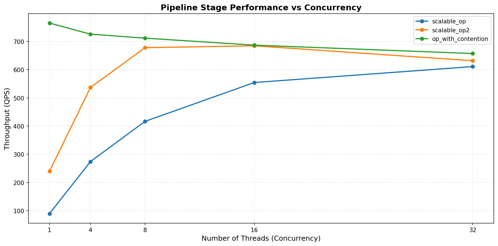

Pipeline profiling¶
Example demonstrating the use of spdl.pipeline.profile_pipeline().
The profile_pipeline() function allows you to benchmark your pipeline
stages independently across different concurrency levels to identify optimal
performance settings. This is particularly useful when tuning pipeline performance
before deploying to production.
This example shows how to:
Create a simple pipeline with multiple processing stages
Use
profile_pipeline()to benchmark each stageAnalyze the profiling results to identify performance bottlenecks
Use a custom callback to process results as they are generated
Visualize performance results with a plot
This example generates an figure like the following.
If a function is time-consuming like networking or performing,
as long as the GIL is released, the performance improves with more threads.
("scalable_op" and "scalable_op2").
The function might be constrained by other factors such as CPU resource,
and it can hit the peak performance at some point. ("scalable_op2")
If the function holds the GIL completely, the performance peaks at single
concurrency, and it degrades as more threads are added. ("op_with_contention")
Source¶
Source
Click here to see the source.
1#!/usr/bin/env python3
2# Copyright (c) Meta Platforms, Inc. and affiliates.
3# All rights reserved.
4#
5# This source code is licensed under the BSD-style license found in the
6# LICENSE file in the root directory of this source tree.
7
8"""Example demonstrating the use of :py:func:`spdl.pipeline.profile_pipeline`.
9
10The :py:func:`~spdl.pipeline.profile_pipeline` function allows you to benchmark your pipeline
11stages independently across different concurrency levels to identify optimal
12performance settings. This is particularly useful when tuning pipeline performance
13before deploying to production.
14
15This example shows how to:
16
171. Create a simple pipeline with multiple processing stages
182. Use :py:func:`~spdl.pipeline.profile_pipeline` to benchmark each stage
193. Analyze the profiling results to identify performance bottlenecks
204. Use a custom callback to process results as they are generated
215. Visualize performance results with a plot
22
23This example generates an figure like the following.
24
25.. image:: ../../_static/data/profile_pipeline_example.png
26
27If a function is time-consuming like networking or performing,
28as long as the GIL is released, the performance improves with more threads.
29(``"scalable_op"`` and ``"scalable_op2"``).
30
31The function might be constrained by other factors such as CPU resource,
32and it can hit the peak performance at some point. (``"scalable_op2"``)
33
34If the function holds the GIL completely, the performance peaks at single
35concurrency, and it degrades as more threads are added. (``"op_with_contention"``)
36"""
37
38import argparse
39import logging
40import time
41from collections.abc import Sequence
42from pathlib import Path
43
44from spdl.pipeline import profile_pipeline, ProfileResult
45from spdl.pipeline.defs import Pipe, PipelineConfig, SinkConfig, SourceConfig
46
47__all__ = [
48 "parse_args",
49 "main",
50 "scalable_op",
51 "scalable_op2",
52 "op_with_contention",
53 "create_pipeline",
54 "print_profile_result",
55 "plot_profile_results",
56 "run_profiling_example",
57]
58
59# pyre-strict
60
61_LG: logging.Logger = logging.getLogger(__name__)
62
63
64def parse_args() -> argparse.Namespace:
65 """Parse command line arguments."""
66 parser = argparse.ArgumentParser(
67 description=__doc__,
68 formatter_class=argparse.RawDescriptionHelpFormatter,
69 )
70 parser.add_argument(
71 "--num-inputs",
72 type=int,
73 default=500,
74 help="Number of inputs to use for profiling each stage",
75 )
76 parser.add_argument(
77 "--plot-output",
78 type=Path,
79 help="Path to save the performance plot (e.g., profile_results.png)",
80 )
81 return parser.parse_args()
82
83
84def scalable_op(x: int) -> int:
85 """Simulate an operation which releases the GIL most of the time.
86
87 Args:
88 x: Input integer
89
90 Returns:
91 The input value multiplied by 2
92 """
93 time.sleep(0.01)
94 return x * 2
95
96
97def scalable_op2(x: int) -> int:
98 """Simulate an operation which releases the GIL some time.
99
100 Args:
101 x: Input integer
102
103 Returns:
104 The input value plus 100
105 """
106 time.sleep(0.003)
107 return x + 100
108
109
110def op_with_contention(x: int) -> int:
111 """Simulate an operation holds the GIL.
112
113 Args:
114 x: Input integer
115
116 Returns:
117 The input value squared
118 """
119 return x**2
120
121
122def create_pipeline(num_sources: int = 1000) -> PipelineConfig[int, int]:
123 """Create a pipeline configuration with multiple stages.
124
125 Args:
126 num_sources: Number of source items to generate
127
128 Returns:
129 Pipeline configuration with three processing stages
130 """
131 return PipelineConfig(
132 src=SourceConfig(range(num_sources)),
133 pipes=[
134 Pipe(scalable_op),
135 Pipe(scalable_op2),
136 Pipe(op_with_contention),
137 ],
138 sink=SinkConfig(buffer_size=10),
139 )
140
141
142def print_profile_result(result: ProfileResult) -> None:
143 """Print profiling result in a formatted way.
144
145 This is a callback function that will be called after each stage is profiled.
146
147 Args:
148 result: Profiling result for a single stage
149 """
150 _LG.info("=" * 60)
151 _LG.info("Stage: %s", result.name)
152 _LG.info("-" * 60)
153
154 for stat in result.stats:
155 _LG.info(
156 "Concurrency %2d: QPS=%8.2f, Occupancy=%5.1f%%",
157 stat.concurrency,
158 stat.qps,
159 stat.occupancy_rate * 100,
160 )
161
162 best_stat = max(result.stats, key=lambda s: s.qps)
163 _LG.info("-" * 60)
164 _LG.info(
165 "Best Performance: Concurrency=%d, QPS=%.2f",
166 best_stat.concurrency,
167 best_stat.qps,
168 )
169 _LG.info("=" * 60)
170
171
172def plot_profile_results(
173 results: Sequence[ProfileResult], output_path: Path | None = None
174) -> None:
175 """Plot profiling results showing QPS vs concurrency for each stage.
176
177 Args:
178 results: List of profiling results for each pipeline stage
179 output_path: Optional path to save the plot. If None, displays the plot.
180 """
181 import matplotlib.pyplot as plt
182
183 plt.figure(figsize=(12, 6))
184
185 all_concurrencies = set()
186 for result in results:
187 concurrencies = [stat.concurrency for stat in result.stats]
188 qps_values = [stat.qps for stat in result.stats]
189 plt.plot(concurrencies, qps_values, marker="o", linewidth=2, label=result.name)
190 all_concurrencies.update(concurrencies)
191
192 sorted_concurrencies = sorted(all_concurrencies, reverse=True)
193 plt.xticks(sorted_concurrencies, [str(c) for c in sorted_concurrencies])
194
195 plt.xlabel("Number of Threads (Concurrency)", fontsize=12)
196 plt.ylabel("Throughput (QPS)", fontsize=12)
197 plt.title(
198 "Pipeline Stage Performance vs Concurrency", fontsize=14, fontweight="bold"
199 )
200 plt.legend(loc="best", fontsize=10)
201 plt.grid(True, alpha=0.3, linestyle="--")
202 plt.tight_layout()
203
204 if output_path:
205 plt.savefig(output_path, dpi=150, bbox_inches="tight")
206 _LG.info("Plot saved to: %s", output_path)
207 else:
208 plt.show()
209
210
211def run_profiling_example(num_inputs: int = 500) -> Sequence[ProfileResult]:
212 """Run the profiling example.
213
214 Args:
215 num_inputs: Number of inputs to use for profiling
216
217 Returns:
218 List of profiling results for each stage
219 """
220 _LG.info("Creating pipeline configuration...")
221 pipeline_config = create_pipeline(num_sources=num_inputs * 2)
222
223 _LG.info("Starting pipeline profiling with %d inputs...", num_inputs)
224 _LG.info("This will benchmark each stage at different concurrency levels.")
225
226 results = profile_pipeline(
227 pipeline_config,
228 num_inputs=num_inputs,
229 callback=print_profile_result,
230 )
231
232 _LG.info("Profiling complete!")
233 _LG.info("Total stages profiled: %d", len(results))
234
235 return results
236
237
238def main() -> None:
239 """Main entry point demonstrating profile_pipeline usage."""
240 logging.basicConfig(
241 level=logging.INFO,
242 format="%(asctime)s [%(levelname)s] %(message)s",
243 )
244
245 args = parse_args()
246
247 _LG.info("Profile Pipeline Example")
248 _LG.info("=" * 60)
249
250 results = run_profiling_example(num_inputs=args.num_inputs)
251
252 _LG.info("\nSummary of Best Performance per Stage:")
253 _LG.info("=" * 60)
254 for result in results:
255 best_stat = max(result.stats, key=lambda s: s.qps)
256 _LG.info(
257 "%-20s: Best at concurrency=%2d (QPS=%.2f)",
258 result.name,
259 best_stat.concurrency,
260 best_stat.qps,
261 )
262
263 if args.plot_output or True:
264 _LG.info("\nGenerating performance plot...")
265 plot_profile_results(results, args.plot_output)
266
267
268if __name__ == "__main__":
269 main()
Functions¶
Functions
- scalable_op(x: int) int[source]¶
Simulate an operation which releases the GIL most of the time.
- Parameters:
x – Input integer
- Returns:
The input value multiplied by 2
- scalable_op2(x: int) int[source]¶
Simulate an operation which releases the GIL some time.
- Parameters:
x – Input integer
- Returns:
The input value plus 100
- op_with_contention(x: int) int[source]¶
Simulate an operation holds the GIL.
- Parameters:
x – Input integer
- Returns:
The input value squared
- create_pipeline(num_sources: int = 1000) PipelineConfig[int, int][source]¶
Create a pipeline configuration with multiple stages.
- Parameters:
num_sources – Number of source items to generate
- Returns:
Pipeline configuration with three processing stages
- print_profile_result(result: ProfileResult) None[source]¶
Print profiling result in a formatted way.
This is a callback function that will be called after each stage is profiled.
- Parameters:
result – Profiling result for a single stage
- plot_profile_results(results: Sequence[ProfileResult], output_path: Path | None = None) None[source]¶
Plot profiling results showing QPS vs concurrency for each stage.
- Parameters:
results – List of profiling results for each pipeline stage
output_path – Optional path to save the plot. If None, displays the plot.
- run_profiling_example(num_inputs: int = 500) Sequence[ProfileResult][source]¶
Run the profiling example.
- Parameters:
num_inputs – Number of inputs to use for profiling
- Returns:
List of profiling results for each stage